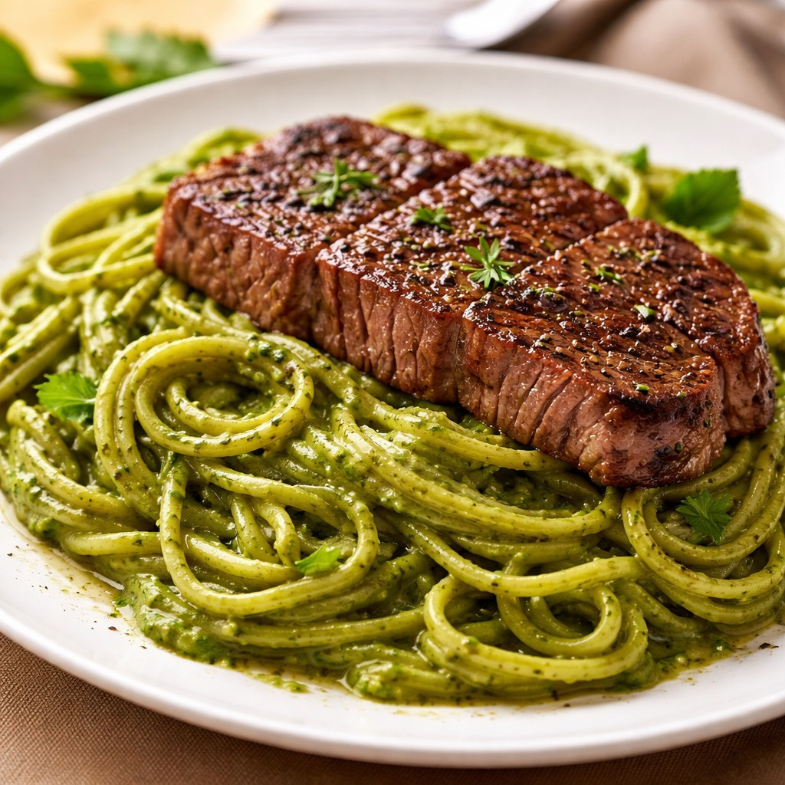

Fideos Verdes

Descripción
Los fideos verdes fueron el primer plato que aprendí a preparar, junto a
mi mejor amiga Luciana Polo!! (te extrañamos LP).
Son una receta sencilla y recomendable para cualquier persona que esté
adentrandose en la cocina
Para poder hacer unos buenos fideos verdes, sigue lo que se muestra a
continuación.
Ingredientes
- 1/2kg de la pasta de tu preferencia
- 1 taza de espinacas deshojadas
- 1/2 taza de albahaca deshojada
- 1/2 lata de leche evaporada
- 1 diente de ajo
- 400gr de queso andino
- 1/2 cebolla roja en cuadraditos
- 4 filetes de lomo de res
- Sal y Pimienta
- Pecanas o almendras molidas al gusto (opcional)
Preparación
-
Blanquear la espinaca y la albahaca por unos minutos en una olla con
agua hirviendo.
Retirar de la olla, escurrir y dejar entibiar.
- Sofreír la cebolla en una olla grande. Reservar.
-
Colocar la cebolla, la espinaca y la albahaca en el vaso de la
licuadora. Agregar el aceite, la leche evaporada, el ajo, el queso y sal
al gusto.
Si se desea, se puede agregar en este momento las pecanas o almendras.
Licuar y reservar.
-
Agregar a la olla la pasta verde que se obtuvo del licuado. Dejar
cocinar unos minutos.
- Añadir los fideos previamente sancochados y mover bien.
-
Llevar una sartén al fuego y agregar un chorro de aceite. Cuando esté
caliente, colocar con cuidado el lomo salpimentado y freír.
Darle la vuelta y retirar cuando alcance la cocción deseada (de
preferencia, termino medio).
- Servir los tallarines y montar el lomo sobre ellos.
Listo! Y así es como obtienes unos ricos fideos verdes listos para servir
y compartir!
Espero que te hayan gustado!
Volver a la página principal